空の写真の撮影位置
空の写真
時々、空の写真を撮っています。
スクールの前の歩道で撮影しました。とてもよく晴れた秋晴れ？残暑の時期だったので夏晴れかもしれません。
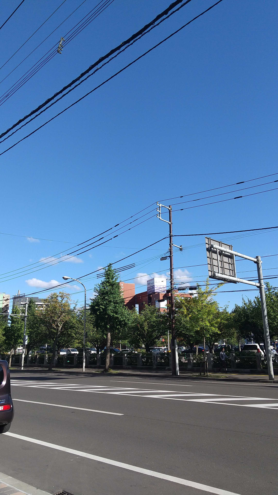地図上のマーカーは
こちら

スクールすぐ横のホテル前の歩道から撮影。木陰からとる写真というのもいい感じかと思って撮ってみました。
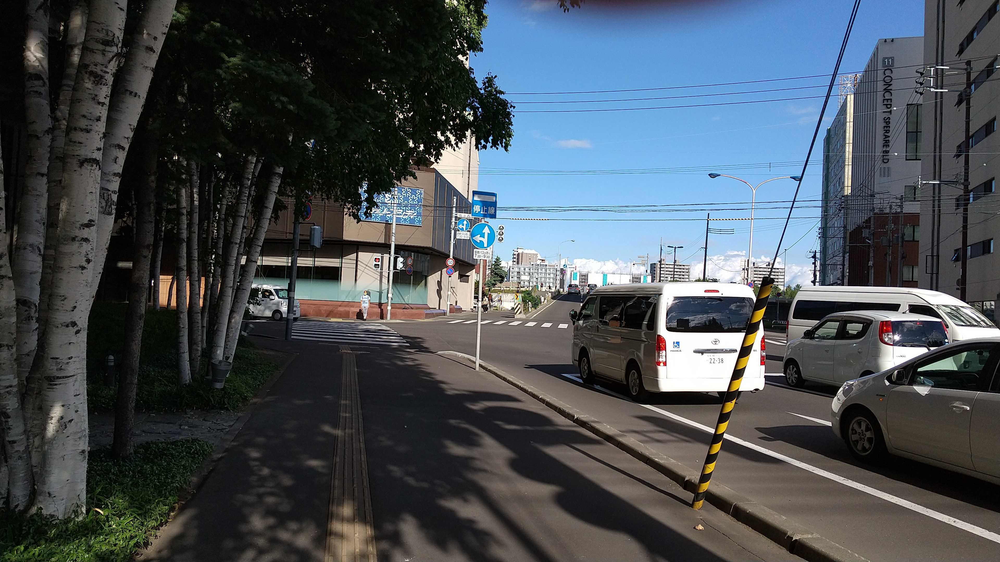ホテルの街路樹？として植えてあるような白樺の樹です。空の撮影のついでに。
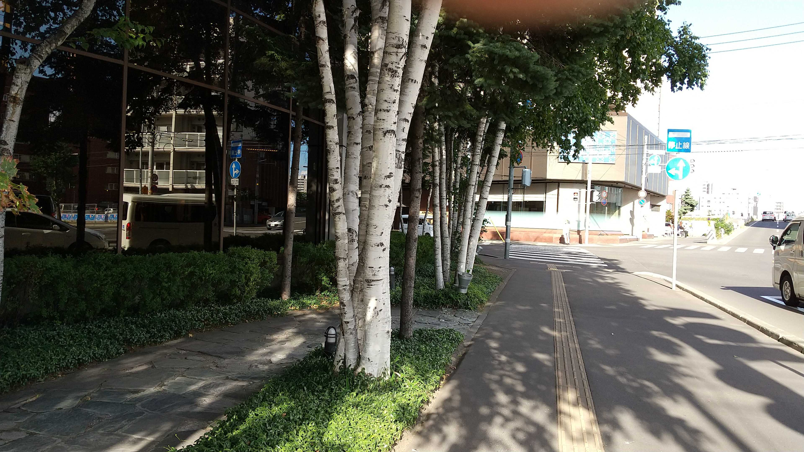地図上のマーカーは こちら
財界さっぽろの看板のある建物の前から空を見上げて一枚。たまに空を見上げるのもいいですね。
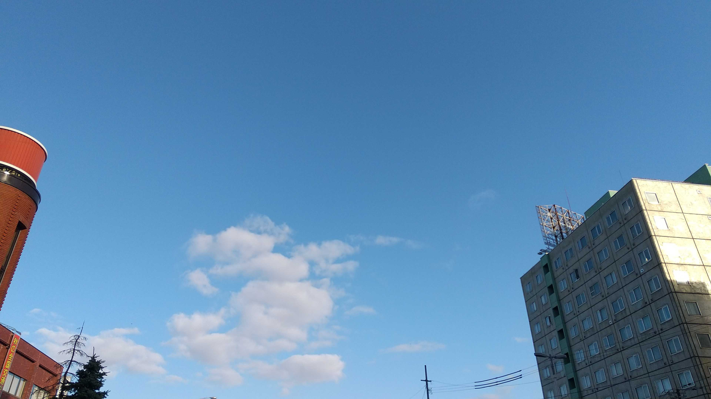地図上のマーカーは こちら
南大橋の中島公園側の信号交差点の角で撮影。豊平川の上だと電線がなくて空が撮りやすいですね。
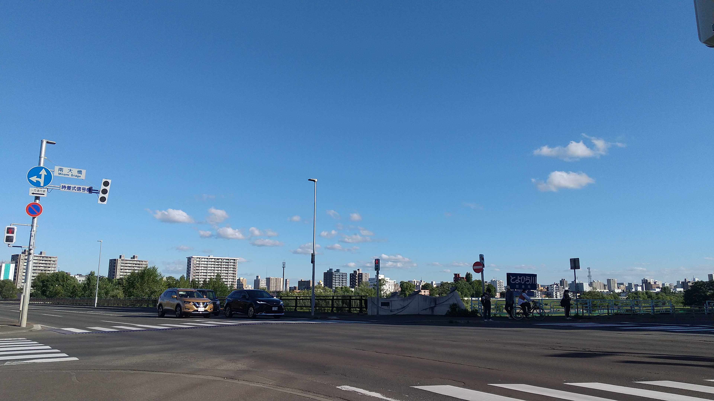同じく南大橋の中島公園側の交差点から撮影。気を付けたのですがだいぶ逆光気味に。
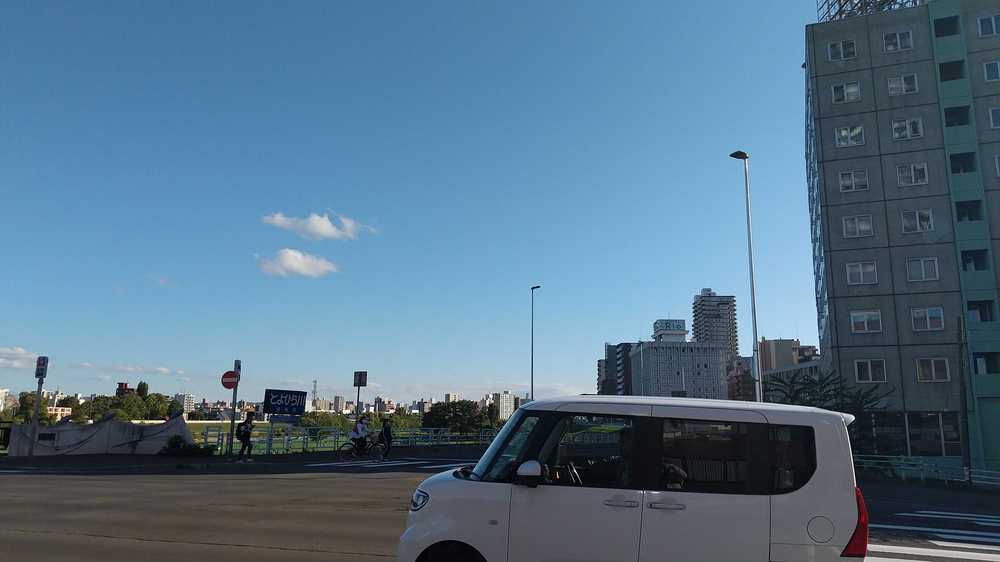地図上のマーカーは こちら
南大橋の途中で橋の下の小さな雑木林を撮影。空の写真ではないですが穴埋めで一枚だけ。
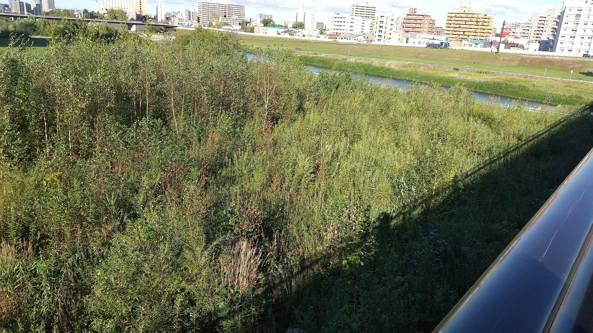地図上のマーカーは こちら

南大橋を渡り切った旭町側で一枚。すぐそばに市立旭小学校があるようですね。
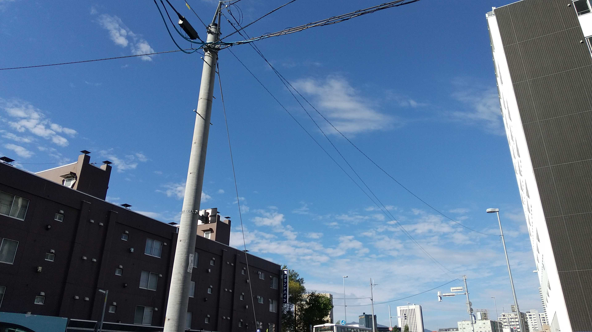地図上のマーカーは こちら
平岸通近くのステーキのヴィクトリア付近で撮影。豊陵公園の樹木と空を合わせて撮ってみたくなりました。
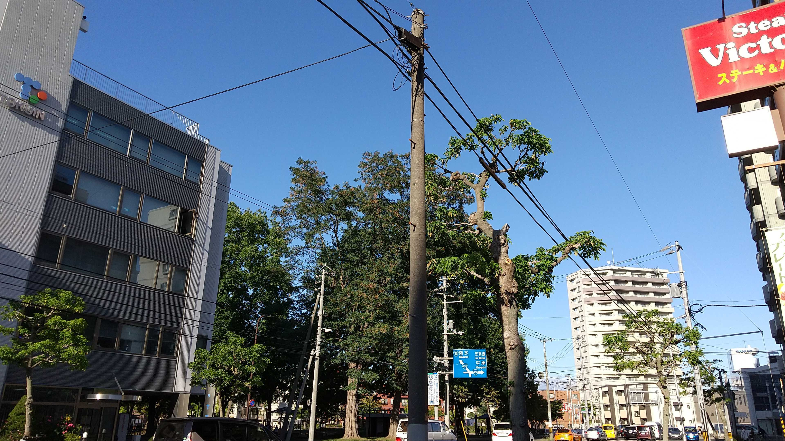ちなみに、ヴィクトリアの裏手は北海学園高校の練習グラウンドみたいです。この日も打撃練習の音がしていました。

地図上のマーカーは こちら
豊陵公園で学園前側に曲がる平岸通の交差点で撮影。平岸通の上で電線があるのが少し残念ですが、いい空の色でした。
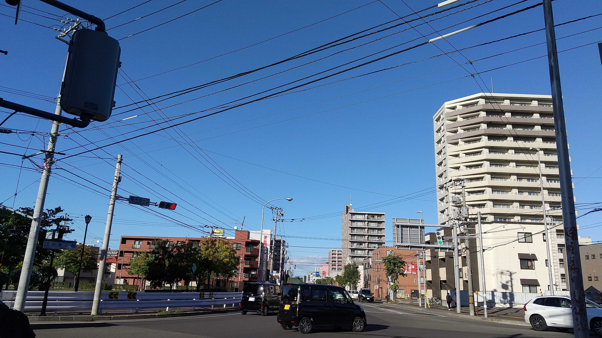ついでに、北海商科大学の建物ときれいな青空とかも撮影してみました。
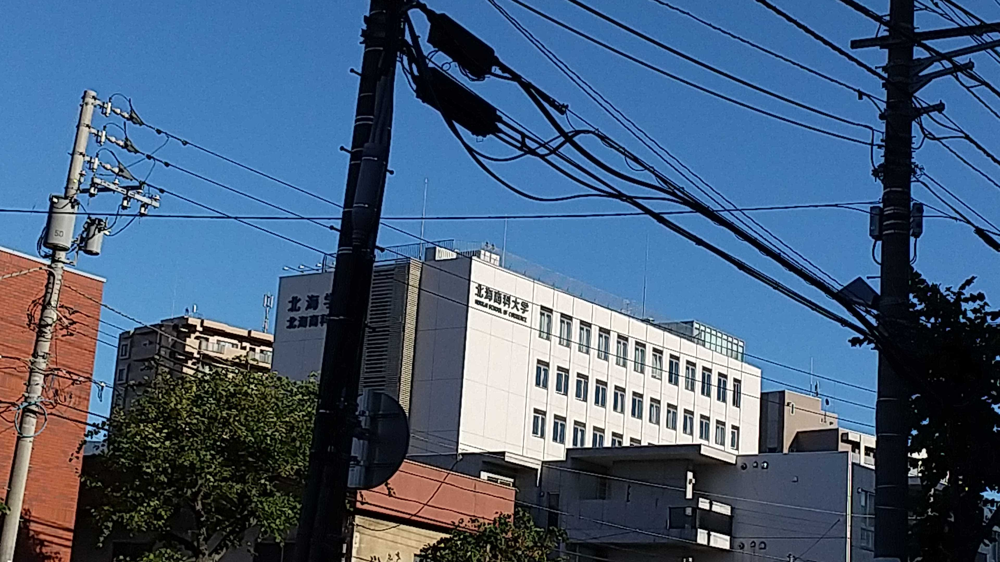地図上のマーカーは こちら